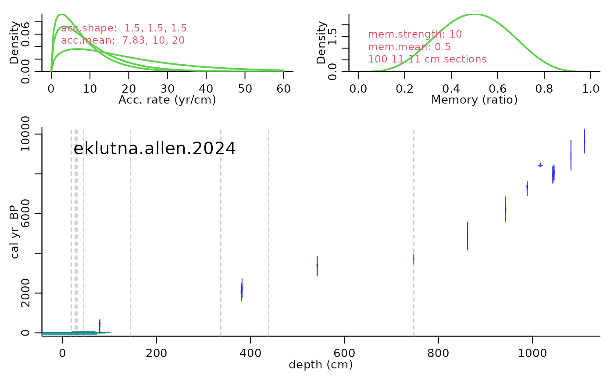
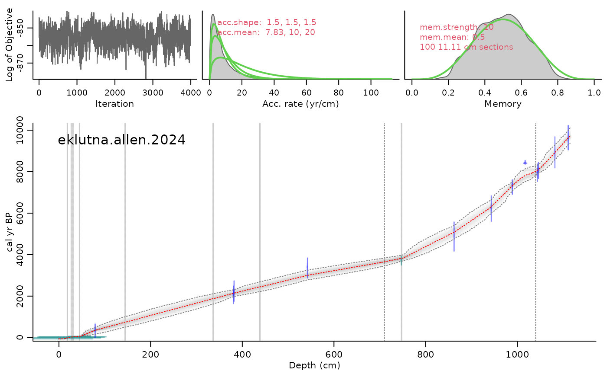
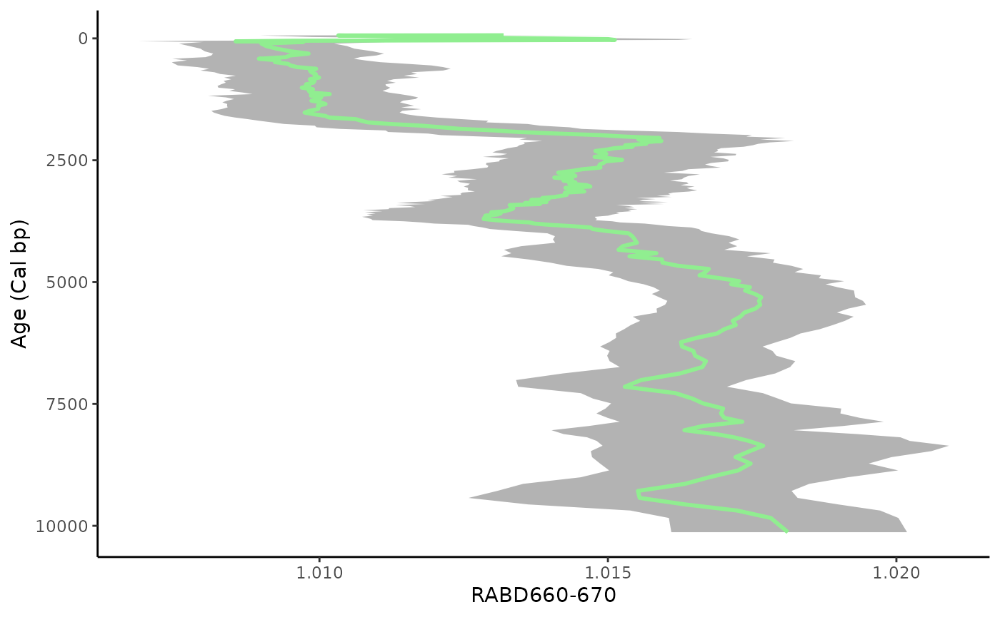
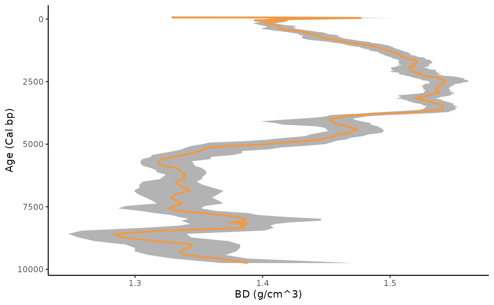
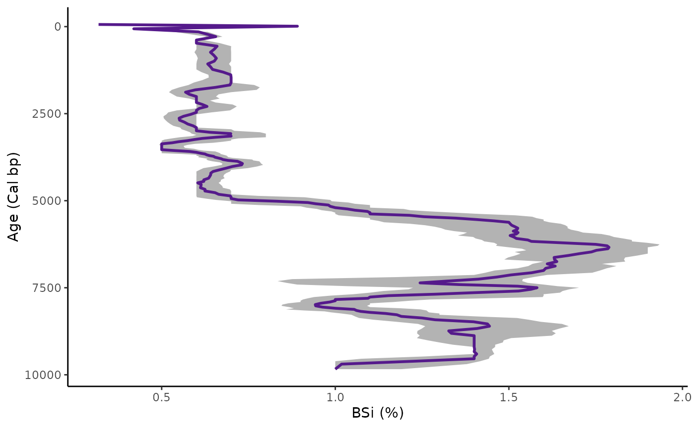
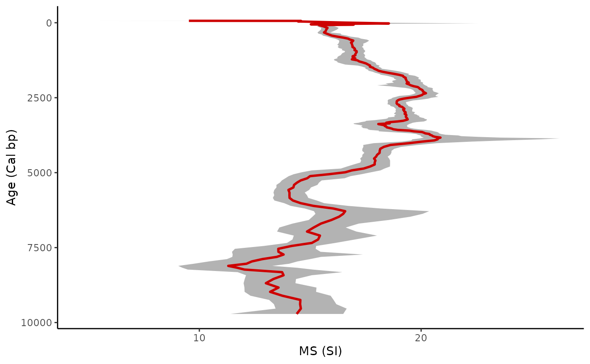
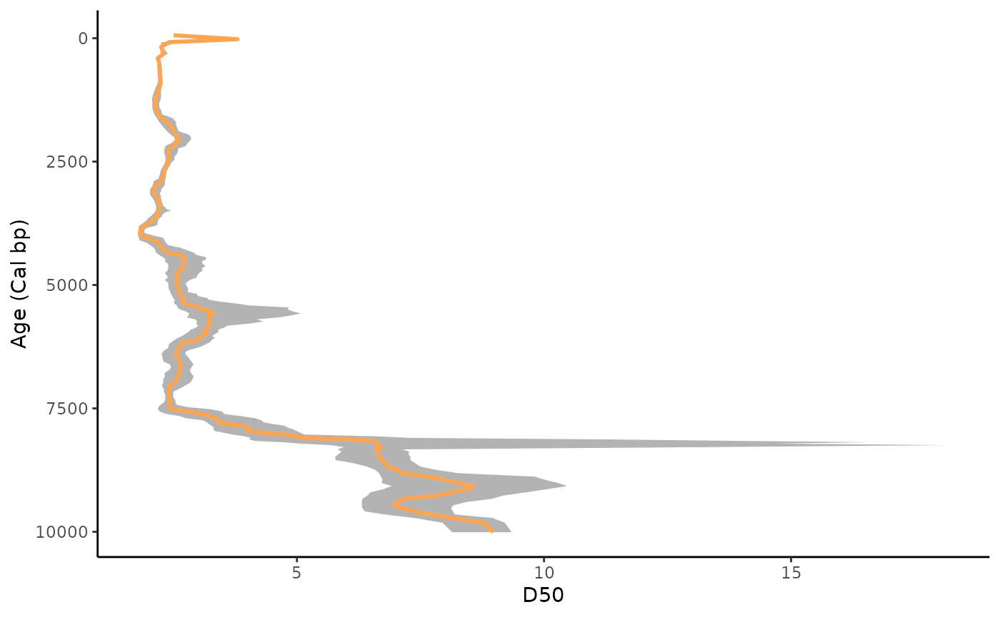
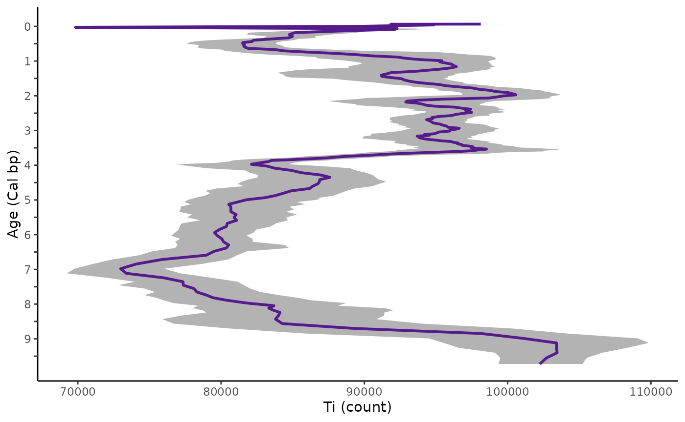
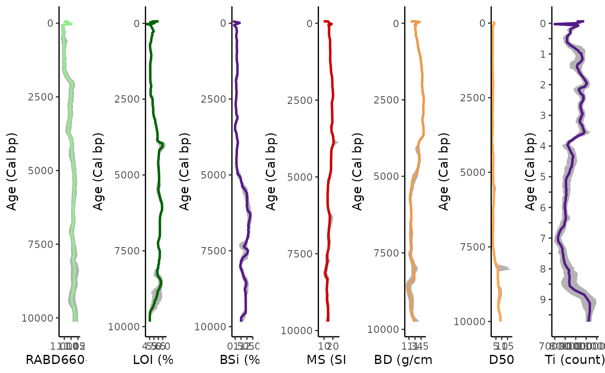

multi-proxy
Hunter
2024-03-25
multi_proxy_plotting.Rmd## Welcome to geoChronR version 1.1.12!## ##
## Attaching package: 'geoChronR'## The following objects are masked from 'package:lipdR':
##
## createTSid, pullTsVariableTable of Contents
Standardized Data
LIPD Playground
Age Modeling
Plotting Sed. Rate and MAR
Plotting Multi-Proxy Records
Particle Size Heatmap
5. Plotting Multi-Proxy Records
Now that we have an age model and proxy records, we will plot some of the records from our paleo data tables in our Lakes lipD file.
First, recall the LipD file and run your age model (visit section 3. Age Modeling). Then, we must map our Bayesian age model onto our paleo data from the lips file. Again, I would recommend visiting this site for more information (https://nickmckay.github.io/GeoChronR/articles/Introduction.html).
Above is the code for mapping each paleotable from the Eklutna dataset. If you are referencing a different dataset or paleo table from your lips file, you will need to adjust the paleo.meas.table.num = # section of the code. I recommend having the browser open with your LipD Playground page so you can correctly name each paleotable.
Eklutna <- lipdR::readLipd(system.file("extdata","eklutna.allen.2024.lpd", package = "paleosedr", mustWork = TRUE))## [1] "Loading 1 datasets from /home/runner/work/_temp/Library/paleosedr/extdata/eklutna.allen.2024.lpd..."
## [1] "reading: eklutna.allen.2024.lpd"
eklutna_age <- runBacon(Eklutna,
lab.id.var = 'labID',
age.14c.var = 'age',
age.14c.uncertainty.var = 'age_uncertainty',
age.var = 'cal_age',
age.uncertainty.var = 'minus_error',
depth.var = 'depth',
reservoir.age.14c.var = NULL,
reservoir.age.14c.uncertainty.var = NULL,
rejected.ages.var = NULL,
ask = FALSE,
bacon.dir = "~/Cores",
suggest = FALSE,
close.connection = FALSE,
d.max = 1115,
slump = c(18,19, 26.5,27, 30,31, 44.5,45, 144,145, 336,337, 438,439, 747,748),
postbomb = 1,
boundary = c(710, 1040),
bacon.acc.mean = c(7.83,10,20),
accept.suggestions = TRUE,)## Looking for laboratory ID
## [1] "Found it! Moving on..."
## Looking for radiocarbon ages
## [1] "Found it! Moving on..."
## Looking for 1-sigma radiocarbon age uncertainty (+/-)
## [1] "Found it! Moving on..."
## Looking for calibrated/calendar ages
## [1] "Found it! Moving on..."
## Looking for 2-sigma calibrated age uncertainty (+/-)
## [1] "Found it! Moving on..."
## Looking for depth or position
## [1] "Found it! Moving on..."
## Looking for radiocarbon reservoir age offsets (deltaR)
## radiocarbon reservoir age offsets (deltaR) does not seem to exist, moving on.
## Looking for radiocarbon reservoir age offsets (deltaR) uncertainties
## radiocarbon reservoir age offsets (deltaR) uncertainties does not seem to exist, moving on.
## Looking for rejected ages
## rejected ages does not seem to exist, moving on.
## [1] "Variable choices for reuse..."
## For future reference: here are the options you chose:
## Find later with getLastVarString()
## lab.id.var = 'labID', age.14c.var = 'age', age.14c.uncertainty.var = 'age_uncertainty', age.var = 'cal_age', age.uncertainty.var = 'minus_error', depth.var = 'depth', reservoir.age.14c.var = NULL, reservoir.age.14c.uncertainty.var = NULL, rejected.ages.var = NULL,
## id age error depth cc dR dSTD ta tb
## 1 1 -65 1.00000 0.0 0 0 0 33 34
## 2 2 -14 1.00000 18.0 0 0 0 33 34
## 3 3 25 1.00000 26.5 0 0 0 33 34
## 4 4 33 1.00000 30.0 0 0 0 33 34
## 5 5 63 3.00000 44.5 0 0 0 33 34
## 6 6 398 63.00000 79.0 1 0 0 3 4
## 7 7 2102 70.00000 380.5 1 0 0 3 4
## 8 8 2235 77.00000 382.0 1 0 0 3 4
## 9 9 3169 82.00000 542.0 1 0 0 3 4
## 10 10 3713 72.00000 747.0 0 0 0 33 34
## 11 11 4315 105.37005 862.0 1 0 0 3 4
## 12 12 5440 117.57917 943.0 1 0 0 3 4
## 13 13 6417 75.02781 989.0 1 0 0 3 4
## 14 14 7635 19.97603 1017.0 1 0 0 3 4
## 15 randomLabId_SwlKLU4Ed5 7113 93.00000 1043.5 1 0 0 3 4
## 16 randomLabId_ie8xomb2Q1 7254 93.00000 1046.0 1 0 0 3 4
## 17 18 8033 146.24705 1082.0 1 0 0 3 4
## 18 19 8642 94.21770 1111.0 1 0 0 3 4
## The run's files will be put in this folder: /home/runner/Cores/eklutna.allen.2024## Using a mix of cal BP and calibrated C-14 dates## Warning! The file with the dates seems newer than the run you are loading. If any dates have been added/changed/removed?, then please run Bacon.cleanup()## Boundary set at depth(s) 704 1033## Will run 19,125,000 iterations and store 4,000
## Reading /home/runner/Cores/eklutna.allen.2024/eklutna.allen.2024_100.bacon
## Constant calibration curve.
## IntCal20: Reading from file: /home/runner/work/_temp/Library/rintcal/extdata/3Col_intcal20.14C
## GenericCal: Reading from file: /home/runner/work/_temp/Library/rintcal/extdata/postbomb_NH1.14C, 70 rows, 3 cols.
## Marine20: Reading from file: /home/runner/work/_temp/Library/rintcal/extdata/3Col_marine20.14C
## SHCal20: Reading from file: /home/runner/work/_temp/Library/rintcal/extdata/3Col_shcal20.14C
## GenericCal: Reading from file: /home/runner/work/_temp/Library/rintcal/extdata/postbomb_NH1.14C, 70 rows, 3 cols.
## Added det: 1: -65.0+-1.0 d=0 ResCorr= 0.0+-0.0 a=33 b=34 cc=Constant c. curve
## Added det: 2: -14.0+-1.0 d=18 ResCorr= 0.0+-0.0 a=33 b=34 cc=Constant c. curve
## Added det: 3: 25.0+-1.0 d=25.5 ResCorr= 0.0+-0.0 a=33 b=34 cc=Constant c. curve
## Added det: 4: 33.0+-1.0 d=28.5 ResCorr= 0.0+-0.0 a=33 b=34 cc=Constant c. curve
## Added det: 5: 63.0+-3.0 d=42 ResCorr= 0.0+-0.0 a=33 b=34 cc=Constant c. curve
## Added det: 6: 398.0+-63.0 d=76 ResCorr= 0.0+-0.0 a=3 b=4 cc=IntCal20+postbomb_NH1.14C
## Added det: 7: 2102.0+-70.0 d=375.5 ResCorr= 0.0+-0.0 a=3 b=4 cc=IntCal20+postbomb_NH1.14C
## Added det: 8: 2235.0+-77.0 d=377 ResCorr= 0.0+-0.0 a=3 b=4 cc=IntCal20+postbomb_NH1.14C
## Added det: 9: 3169.0+-82.0 d=536 ResCorr= 0.0+-0.0 a=3 b=4 cc=IntCal20+postbomb_NH1.14C
## Added det: 10: 3713.0+-72.0 d=741 ResCorr= 0.0+-0.0 a=33 b=34 cc=Constant c. curve
## Added det: 11: 4315.0+-105.4 d=855 ResCorr= 0.0+-0.0 a=3 b=4 cc=IntCal20+postbomb_NH1.14C
## Added det: 12: 5440.0+-117.6 d=936 ResCorr= 0.0+-0.0 a=3 b=4 cc=IntCal20+postbomb_NH1.14C
## Added det: 13: 6417.0+-75.0 d=982 ResCorr= 0.0+-0.0 a=3 b=4 cc=IntCal20+postbomb_NH1.14C
## Added det: 14: 7635.0+-20.0 d=1010 ResCorr= 0.0+-0.0 a=3 b=4 cc=IntCal20+postbomb_NH1.14C
## Added det: randomLabId_SwlKLU4Ed5: 7113.0+-93.0 d=1036.5 ResCorr= 0.0+-0.0 a=3 b=4 cc=IntCal20+postbomb_NH1.14C
## Added det: randomLabId_ie8xomb2Q1: 7254.0+-93.0 d=1039 ResCorr= 0.0+-0.0 a=3 b=4 cc=IntCal20+postbomb_NH1.14C
## Added det: 18: 8033.0+-146.2 d=1075 ResCorr= 0.0+-0.0 a=3 b=4 cc=IntCal20+postbomb_NH1.14C
## Added det: 19: 8642.0+-94.2 d=1104 ResCorr= 0.0+-0.0 a=3 b=4 cc=IntCal20+postbomb_NH1.14C
## Added det: NA: 8642.0+-8642000.0 d=1115 ResCorr= 0.0+-0.0 a=3 b=4 cc=IntCal20+postbomb_NH1.14C
## Hiatus at: 1033.000000
## Hiatus at: 704.000000
## Since no file /home/runner/Cores/eklutna.allen.2024/eklutna.allen.2024_100.bacon.init was provided with initial values for the twalk, I will be using simulated values.
## BaconFixed: Bacon jumps model with fixed c's.
## K=100, H=2, dim=102, Seed=310741, Dc=11.110000, c(0)=0.000000, c(K)=1111.000000
##
## twalk: 19125000 iterations to run, Sun Apr 21 17:00:25 2024
##
## BUFSIZ is 8192, optimal block size changed to 4096
## twalk: All stored iterations to be saved in file /home/runner/Cores/eklutna.allen.2024/eklutna.allen.2024_100.out
## twalk: 5925888 iterations so far
## Will finish in approx. 1 minutes and 9 seconds.
## twalk: 17633280 iterations so far
## Will finish in approx. 7 seconds.
## twalk: Finished, 0.3% of moved pars per iteration (ratio 63277.931373/19125000). Output in file /home/runner/Cores/eklutna.allen.2024/eklutna.allen.2024_100.out,
## Sun Apr 21 17:02:04 2024
##
## Writing two last points of the twalk in /home/runner/Cores/eklutna.allen.2024/eklutna.allen.2024_100.bacon.last.
## bacon: 2243 WarnBeyondLimits warnings:
## bacon: WARNING: calibration attempted beyond MinYr= -74.000000 or MaxYr= 1000000.000000
## bacon: burn in (initial iterations which will be removed): 7650000
## Eso es to...eso es to...eso es to...eso es toooodo amigos!## Warning, this will take quite some time to calculate. I suggest increasing d.by to, e.g., 10## Calculating age ranges...## | | | 0% | |= | 1% | |= | 2% | |== | 3% | |== | 4% | |=== | 4% | |==== | 5% | |==== | 6% | |===== | 7% | |====== | 8% | |====== | 9% | |======= | 10% | |======= | 11% | |======== | 11% | |========= | 12% | |========= | 13% | |========== | 14% | |========== | 15% | |=========== | 16% | |============ | 17% | |============ | 18% | |============= | 19% | |============== | 19% | |============== | 20% | |=============== | 21% | |=============== | 22% | |================ | 23% | |================= | 24% | |================= | 25% | |================== | 26% | |=================== | 26% | |=================== | 27% | |==================== | 28% | |==================== | 29% | |===================== | 30% | |====================== | 31% | |====================== | 32% | |======================= | 33% | |======================== | 34% | |========================= | 35% | |========================= | 36% | |========================== | 37% | |=========================== | 38% | |=========================== | 39% | |============================ | 40% | |============================ | 41% | |============================= | 41% | |============================== | 42% | |============================== | 43% | |=============================== | 44% | |=============================== | 45% | |================================ | 46% | |================================= | 47% | |================================= | 48% | |================================== | 48% | |=================================== | 49% | |=================================== | 50% | |==================================== | 51% | |==================================== | 52% | |===================================== | 53% | |====================================== | 54% | |====================================== | 55% | |======================================= | 56% | |======================================== | 57% | |========================================= | 58% | |========================================= | 59% | |========================================== | 60% | |=========================================== | 61% | |=========================================== | 62% | |============================================ | 63% | |============================================= | 64% | |============================================== | 65% | |============================================== | 66% | |=============================================== | 67% | |=============================================== | 68% | |================================================ | 69% | |================================================= | 70% | |================================================== | 71% | |=================================================== | 72% | |=================================================== | 73% | |==================================================== | 74% | |==================================================== | 75% | |===================================================== | 76% | |====================================================== | 77% | |====================================================== | 78% | |======================================================= | 78% | |======================================================== | 79% | |======================================================== | 80% | |========================================================= | 81% | |========================================================= | 82% | |========================================================== | 83% | |=========================================================== | 84% | |=========================================================== | 85% | |============================================================ | 85% | |============================================================ | 86% | |============================================================= | 87% | |============================================================== | 88% | |============================================================== | 89% | |=============================================================== | 90% | |================================================================ | 91% | |================================================================ | 92% | |================================================================= | 93% | |================================================================== | 94% | |=================================================================== | 95% | |=================================================================== | 96% | |==================================================================== | 97% | |==================================================================== | 98% | |===================================================================== | 99% | |======================================================================| 100%##
## Preparing ghost graph...## | | | 0% | | | 1% | |= | 1% | |= | 2% | |== | 2% | |== | 3% | |== | 4% | |=== | 4% | |=== | 5% | |==== | 5% | |==== | 6% | |===== | 7% | |===== | 8% | |====== | 8% | |====== | 9% | |======= | 9% | |======= | 10% | |======= | 11% | |======== | 11% | |======== | 12% | |========= | 12% | |========= | 13% | |========== | 14% | |========== | 15% | |=========== | 15% | |=========== | 16% | |============ | 17% | |============ | 18% | |============= | 18% | |============= | 19% | |============== | 19% | |============== | 20% | |============== | 21% | |=============== | 21% | |=============== | 22% | |================ | 22% | |================ | 23% | |================= | 24% | |================= | 25% | |================== | 25% | |================== | 26% | |=================== | 27% | |=================== | 28% | |==================== | 28% | |==================== | 29% | |===================== | 29% | |===================== | 30% | |===================== | 31% | |====================== | 31% | |====================== | 32% | |======================= | 32% | |======================= | 33% | |======================== | 34% | |======================== | 35% | |========================= | 35% | |========================= | 36% | |========================== | 37% | |========================== | 38% | |=========================== | 38% | |=========================== | 39% | |============================ | 39% | |============================ | 40% | |============================ | 41% | |============================= | 41% | |============================= | 42% | |============================== | 42% | |============================== | 43% | |=============================== | 44% | |=============================== | 45% | |================================ | 45% | |================================ | 46% | |================================= | 46% | |================================= | 47% | |================================= | 48% | |================================== | 48% | |================================== | 49% | |=================================== | 49% | |=================================== | 50% | |=================================== | 51% | |==================================== | 51% | |==================================== | 52% | |===================================== | 52% | |===================================== | 53% | |===================================== | 54% | |====================================== | 54% | |====================================== | 55% | |======================================= | 55% | |======================================= | 56% | |======================================== | 57% | |======================================== | 58% | |========================================= | 58% | |========================================= | 59% | |========================================== | 59% | |========================================== | 60% | |========================================== | 61% | |=========================================== | 61% | |=========================================== | 62% | |============================================ | 62% | |============================================ | 63% | |============================================= | 64% | |============================================= | 65% | |============================================== | 65% | |============================================== | 66% | |=============================================== | 67% | |=============================================== | 68% | |================================================ | 68% | |================================================ | 69% | |================================================= | 69% | |================================================= | 70% | |================================================= | 71% | |================================================== | 71% | |================================================== | 72% | |=================================================== | 72% | |=================================================== | 73% | |==================================================== | 74% | |==================================================== | 75% | |===================================================== | 75% | |===================================================== | 76% | |====================================================== | 77% | |====================================================== | 78% | |======================================================= | 78% | |======================================================= | 79% | |======================================================== | 79% | |======================================================== | 80% | |======================================================== | 81% | |========================================================= | 81% | |========================================================= | 82% | |========================================================== | 82% | |========================================================== | 83% | |=========================================================== | 84% | |=========================================================== | 85% | |============================================================ | 85% | |============================================================ | 86% | |============================================================= | 87% | |============================================================= | 88% | |============================================================== | 88% | |============================================================== | 89% | |=============================================================== | 89% | |=============================================================== | 90% | |=============================================================== | 91% | |================================================================ | 91% | |================================================================ | 92% | |================================================================= | 92% | |================================================================= | 93% | |================================================================== | 94% | |================================================================== | 95% | |=================================================================== | 95% | |=================================================================== | 96% | |==================================================================== | 96% | |==================================================================== | 97% | |==================================================================== | 98% | |===================================================================== | 98% | |===================================================================== | 99% | |======================================================================| 99% | |======================================================================| 100%##
## Mean 95% confidence ranges 501 yr, min. 3 yr between 28 and 29 cm, max. 855 yr at 896 cm## 94% of the dates overlap with the age-depth model (95% ranges)## ## Warning, this will take quite some time to calculate. I suggest increasing d.by to, e.g., 10## | | | 0% | |= | 1% | |= | 2% | |== | 3% | |== | 4% | |=== | 4% | |==== | 5% | |==== | 6% | |===== | 7% | |====== | 8% | |====== | 9% | |======= | 10% | |======= | 11% | |======== | 11% | |========= | 12% | |========= | 13% | |========== | 14% | |========== | 15% | |=========== | 16% | |============ | 17% | |============ | 18% | |============= | 19% | |============== | 19% | |============== | 20% | |=============== | 21% | |=============== | 22% | |================ | 23% | |================= | 24% | |================= | 25% | |================== | 26% | |=================== | 26% | |=================== | 27% | |==================== | 28% | |==================== | 29% | |===================== | 30% | |====================== | 31% | |====================== | 32% | |======================= | 33% | |======================== | 34% | |========================= | 35% | |========================= | 36% | |========================== | 37% | |=========================== | 38% | |=========================== | 39% | |============================ | 40% | |============================ | 41% | |============================= | 41% | |============================== | 42% | |============================== | 43% | |=============================== | 44% | |=============================== | 45% | |================================ | 46% | |================================= | 47% | |================================= | 48% | |================================== | 48% | |=================================== | 49% | |=================================== | 50% | |==================================== | 51% | |==================================== | 52% | |===================================== | 53% | |====================================== | 54% | |====================================== | 55% | |======================================= | 56% | |======================================== | 57% | |========================================= | 58% | |========================================= | 59% | |========================================== | 60% | |=========================================== | 61% | |=========================================== | 62% | |============================================ | 63% | |============================================= | 64% | |============================================== | 65% | |============================================== | 66% | |=============================================== | 67% | |=============================================== | 68% | |================================================ | 69% | |================================================= | 70% | |================================================== | 71% | |=================================================== | 72% | |=================================================== | 73% | |==================================================== | 74% | |==================================================== | 75% | |===================================================== | 76% | |====================================================== | 77% | |====================================================== | 78% | |======================================================= | 78% | |======================================================== | 79% | |======================================================== | 80% | |========================================================= | 81% | |========================================================= | 82% | |========================================================== | 83% | |=========================================================== | 84% | |=========================================================== | 85% | |============================================================ | 85% | |============================================================ | 86% | |============================================================= | 87% | |============================================================== | 88% | |============================================================== | 89% | |=============================================================== | 90% | |================================================================ | 91% | |================================================================ | 92% | |================================================================= | 93% | |================================================================== | 94% | |=================================================================== | 95% | |=================================================================== | 96% | |==================================================================== | 97% | |==================================================================== | 98% | |===================================================================== | 99% | |======================================================================| 100%
## | | | 0% | | | 1% | |= | 1% | |= | 2% | |== | 2% | |== | 3% | |== | 4% | |=== | 4% | |=== | 5% | |==== | 5% | |==== | 6% | |===== | 7% | |===== | 8% | |====== | 8% | |====== | 9% | |======= | 9% | |======= | 10% | |======= | 11% | |======== | 11% | |======== | 12% | |========= | 12% | |========= | 13% | |========== | 14% | |========== | 15% | |=========== | 15% | |=========== | 16% | |============ | 17% | |============ | 18% | |============= | 18% | |============= | 19% | |============== | 19% | |============== | 20% | |============== | 21% | |=============== | 21% | |=============== | 22% | |================ | 22% | |================ | 23% | |================= | 24% | |================= | 25% | |================== | 25% | |================== | 26% | |=================== | 27% | |=================== | 28% | |==================== | 28% | |==================== | 29% | |===================== | 29% | |===================== | 30% | |===================== | 31% | |====================== | 31% | |====================== | 32% | |======================= | 32% | |======================= | 33% | |======================== | 34% | |======================== | 35% | |========================= | 35% | |========================= | 36% | |========================== | 37% | |========================== | 38% | |=========================== | 38% | |=========================== | 39% | |============================ | 39% | |============================ | 40% | |============================ | 41% | |============================= | 41% | |============================= | 42% | |============================== | 42% | |============================== | 43% | |=============================== | 44% | |=============================== | 45% | |================================ | 45% | |================================ | 46% | |================================= | 46% | |================================= | 47% | |================================= | 48% | |================================== | 48% | |================================== | 49% | |=================================== | 49% | |=================================== | 50% | |=================================== | 51% | |==================================== | 51% | |==================================== | 52% | |===================================== | 52% | |===================================== | 53% | |===================================== | 54% | |====================================== | 54% | |====================================== | 55% | |======================================= | 55% | |======================================= | 56% | |======================================== | 57% | |======================================== | 58% | |========================================= | 58% | |========================================= | 59% | |========================================== | 59% | |========================================== | 60% | |========================================== | 61% | |=========================================== | 61% | |=========================================== | 62% | |============================================ | 62% | |============================================ | 63% | |============================================= | 64% | |============================================= | 65% | |============================================== | 65% | |============================================== | 66% | |=============================================== | 67% | |=============================================== | 68% | |================================================ | 68% | |================================================ | 69% | |================================================= | 69% | |================================================= | 70% | |================================================= | 71% | |================================================== | 71% | |================================================== | 72% | |=================================================== | 72% | |=================================================== | 73% | |==================================================== | 74% | |==================================================== | 75% | |===================================================== | 75% | |===================================================== | 76% | |====================================================== | 77% | |====================================================== | 78% | |======================================================= | 78% | |======================================================= | 79% | |======================================================== | 79% | |======================================================== | 80% | |======================================================== | 81% | |========================================================= | 81% | |========================================================= | 82% | |========================================================== | 82% | |========================================================== | 83% | |=========================================================== | 84% | |=========================================================== | 85% | |============================================================ | 85% | |============================================================ | 86% | |============================================================= | 87% | |============================================================= | 88% | |============================================================== | 88% | |============================================================== | 89% | |=============================================================== | 89% | |=============================================================== | 90% | |=============================================================== | 91% | |================================================================ | 91% | |================================================================ | 92% | |================================================================= | 92% | |================================================================= | 93% | |================================================================== | 94% | |================================================================== | 95% | |=================================================================== | 95% | |=================================================================== | 96% | |==================================================================== | 96% | |==================================================================== | 97% | |==================================================================== | 98% | |===================================================================== | 98% | |===================================================================== | 99% | |======================================================================| 99% | |======================================================================| 100%[1] "taking a short break..."
map_rabd <-mapAgeEnsembleToPaleoData(eklutna_age,age.var = "ageEnsemble",paleo.meas.table.num = 1)## [1] "eklutna.allen.2024"
## [1] "Looking for age ensemble...."
## [1] "Found it! Moving on..."
## [1] "Found it! Moving on..."
## [1] "getting depth from the paleodata table..."
## [1] "Found it! Moving on..."
## mapAgeEnsembleToPaleoData created new variable ageEnsemble in paleo 1 measurement table 1
## mapAgeEnsembleToPaleoData also created new variable ageMedian in paleo 1 measurement table 1
map_loi <-mapAgeEnsembleToPaleoData(eklutna_age,age.var = "ageEnsemble",paleo.meas.table.num = 2)## [1] "eklutna.allen.2024"
## [1] "Looking for age ensemble...."
## [1] "Found it! Moving on..."
## [1] "Found it! Moving on..."
## [1] "getting depth from the paleodata table..."
## [1] "Found it! Moving on..."
## mapAgeEnsembleToPaleoData created new variable ageEnsemble in paleo 1 measurement table 2
## mapAgeEnsembleToPaleoData also created new variable ageMedian in paleo 1 measurement table 2
map_bd <-mapAgeEnsembleToPaleoData(eklutna_age,age.var = "ageEnsemble",paleo.meas.table.num = 3)## [1] "eklutna.allen.2024"
## [1] "Looking for age ensemble...."
## [1] "Found it! Moving on..."
## [1] "Found it! Moving on..."
## [1] "getting depth from the paleodata table..."
## [1] "Found it! Moving on..."
## mapAgeEnsembleToPaleoData created new variable ageEnsemble in paleo 1 measurement table 3
## mapAgeEnsembleToPaleoData also created new variable ageMedian in paleo 1 measurement table 3
map_ms <-mapAgeEnsembleToPaleoData(eklutna_age,age.var = "ageEnsemble",paleo.meas.table.num = 4)## [1] "eklutna.allen.2024"
## [1] "Looking for age ensemble...."
## [1] "Found it! Moving on..."
## [1] "Found it! Moving on..."
## [1] "getting depth from the paleodata table..."
## [1] "Found it! Moving on..."
## mapAgeEnsembleToPaleoData created new variable ageEnsemble in paleo 1 measurement table 4
## mapAgeEnsembleToPaleoData also created new variable ageMedian in paleo 1 measurement table 4
map_bsi <-mapAgeEnsembleToPaleoData(eklutna_age,age.var = "ageEnsemble",paleo.meas.table.num = 5)## [1] "eklutna.allen.2024"
## [1] "Looking for age ensemble...."
## [1] "Found it! Moving on..."
## [1] "Found it! Moving on..."
## [1] "getting depth from the paleodata table..."
## [1] "Found it! Moving on..."
## mapAgeEnsembleToPaleoData created new variable ageEnsemble in paleo 1 measurement table 5
## mapAgeEnsembleToPaleoData also created new variable ageMedian in paleo 1 measurement table 5
map_grain <- mapAgeEnsembleToPaleoData(eklutna_age,age.var = "ageEnsemble",paleo.meas.table.num = 6)## [1] "eklutna.allen.2024"
## [1] "Looking for age ensemble...."
## [1] "Found it! Moving on..."
## [1] "Found it! Moving on..."
## [1] "getting depth from the paleodata table..."
## [1] "Found it! Moving on..."
## mapAgeEnsembleToPaleoData created new variable ageEnsemble in paleo 1 measurement table 6
## mapAgeEnsembleToPaleoData also created new variable ageMedian in paleo 1 measurement table 6
map_clay <- mapAgeEnsembleToPaleoData(eklutna_age,age.var = "ageEnsemble",paleo.meas.table.num = 7)## [1] "eklutna.allen.2024"
## [1] "Looking for age ensemble...."
## [1] "Found it! Moving on..."
## [1] "Found it! Moving on..."
## [1] "getting depth from the paleodata table..."
## [1] "Found it! Moving on..."
## mapAgeEnsembleToPaleoData created new variable ageEnsemble in paleo 1 measurement table 7
## mapAgeEnsembleToPaleoData also created new variable ageMedian in paleo 1 measurement table 7
map_xrf <- mapAgeEnsembleToPaleoData(eklutna_age,age.var = "ageEnsemble",paleo.meas.table.num = 8)## [1] "eklutna.allen.2024"
## [1] "Looking for age ensemble...."
## [1] "Found it! Moving on..."
## [1] "Found it! Moving on..."
## [1] "getting depth from the paleodata table..."
## [1] "Found it! Moving on..."
## mapAgeEnsembleToPaleoData created new variable ageEnsemble in paleo 1 measurement table 8
## mapAgeEnsembleToPaleoData also created new variable ageMedian in paleo 1 measurement table 8
map_sed_rate <- mapAgeEnsembleToPaleoData(eklutna_age,age.var = "ageEnsemble",paleo.meas.table.num = 9)## [1] "eklutna.allen.2024"
## [1] "Looking for age ensemble...."
## [1] "Found it! Moving on..."
## [1] "Found it! Moving on..."
## [1] "getting depth from the paleodata table..."
## [1] "Found it! Moving on..."
## mapAgeEnsembleToPaleoData created new variable ageEnsemble in paleo 1 measurement table 9
## mapAgeEnsembleToPaleoData also created new variable ageMedian in paleo 1 measurement table 9
map_mar <-mapAgeEnsembleToPaleoData(eklutna_age,age.var = "ageEnsemble",paleo.meas.table.num = 10) ## [1] "eklutna.allen.2024"
## [1] "Looking for age ensemble...."
## [1] "Found it! Moving on..."
## [1] "Found it! Moving on..."
## [1] "getting depth from the paleodata table..."
## [1] "Found it! Moving on..."
## mapAgeEnsembleToPaleoData created new variable ageEnsemble in paleo 1 measurement table 10
## mapAgeEnsembleToPaleoData also created new variable ageMedian in paleo 1 measurement table 10
map_xrf_clr <-mapAgeEnsembleToPaleoData(eklutna_age,age.var = "ageEnsemble",paleo.meas.table.num = 11) ## [1] "eklutna.allen.2024"
## [1] "Looking for age ensemble...."
## [1] "Found it! Moving on..."
## [1] "Found it! Moving on..."
## [1] "getting depth from the paleodata table..."
## [1] "Found it! Moving on..."
## mapAgeEnsembleToPaleoData created new variable ageEnsemble in paleo 1 measurement table 11
## mapAgeEnsembleToPaleoData also created new variable ageMedian in paleo 1 measurement table 11
map_pca1_all <- mapAgeEnsembleToPaleoData(eklutna_age,age.var = "ageEnsemble",paleo.meas.table.num = 12)## [1] "eklutna.allen.2024"
## [1] "Looking for age ensemble...."
## [1] "Found it! Moving on..."
## [1] "Found it! Moving on..."
## [1] "getting depth from the paleodata table..."
## [1] "Found it! Moving on..."
## mapAgeEnsembleToPaleoData created new variable ageEnsemble in paleo 1 measurement table 12
## mapAgeEnsembleToPaleoData also created new variable ageMedian in paleo 1 measurement table 12Here are the basic proxy functions I’ve made below. All you have to do is call your data and plot away!
rabd_plot <- plot_rabd_ens(map_rabd)## [1] "Found it! Moving on..."
## [1] "Found it! Moving on..."## Scale for x is already present.
## Adding another scale for x, which will replace the existing scale.
bd_plot <- plot_bd_ens(map_bd)## [1] "Found it! Moving on..."
## [1] "Found it! Moving on..."## Scale for x is already present.
## Adding another scale for x, which will replace the existing scale.
loi_plot <- plot_loi_ens(map_loi)## [1] "Found it! Moving on..."
## [1] "Found it! Moving on..."## Scale for x is already present.
## Adding another scale for x, which will replace the existing scale.
bsi_plot <- plot_bsi_ens(map_bsi)## [1] "Found it! Moving on..."
## [1] "Found it! Moving on..."## Scale for x is already present.
## Adding another scale for x, which will replace the existing scale.
ms_plot <- plot_ms_ens(map_ms)## [1] "Found it! Moving on..."
## [1] "Found it! Moving on..."## Scale for x is already present.
## Adding another scale for x, which will replace the existing scale.
Depending on what grain size you would like to plot, you can add the record to your LipD file. Here’s an example of the code I use for D50. You can switch this out for clay, fine silt, coarse sand, etc….
grain <- selectData(map_grain,var.name = "ageEnsemble",meas.table.num = 6)## [1] "Found it! Moving on..."
grain_size <- selectData(map_grain,var.name = "d50",meas.table.num = 6)## [1] "Found it! Moving on..."
d50.plot <- plotTimeseriesEnsRibbons(X = grain,Y = grain_size, probs = c(0.25,0.5,0.75),color.line = "tan1")+
coord_flip()+
scale_x_reverse()+
theme_classic()+
labs(x = "Age (Cal bp)", y = "D50")## Scale for x is already present.
## Adding another scale for x, which will replace the existing scale.
print(d50.plot)
I also chose not to make a specific function for XRF data since the paleotable can be highly variable from core to core. I usually use the following code and change out the referenced element:
xrf <- selectData(map_xrf,var.name = "ageEnsemble",meas.table.num = 8)## [1] "Found it! Moving on..."
xrf_ti <- selectData(map_xrf,var.name = "ti",meas.table.num = 8)## [1] "Found it! Moving on..."
xrf_ti_plot <- plotTimeseriesEnsRibbons(X = xrf,Y = xrf_ti, probs = c(0.25,0.5,0.75),color.line = "purple4")+
coord_flip()+
scale_x_reverse()+
theme_classic()+
labs(x = "Age (Cal bp)", y = "Ti (count)")+
scale_x_reverse(
breaks = c(9500,9000,8500, 8000,7500, 7000,6500, 6000,5500, 5000,4500, 4000,3500, 3000,2500, 2000,1500, 1000,500, 0),
labels = c("", "9","", "8","", "7","", "6","", "5","", "4","", "3","", "2","", "1","", "0")) +
theme_classic()## Scale for x is already present.
## Adding another scale for x, which will replace the existing scale.
## Scale for x is already present.
## Adding another scale for x, which will replace the existing scale.
print(xrf_ti_plot)
Great! Now that you have a bunch of plots let’s use the package “gridExtra†to plot them vertically next to each other. You can also fiddle with the code to plot them all horizontally. The “align =”x†command in the code below will try to align all the plots by the x-axis. Be careful, though, because this is not always perfect. You can adjust the x-lim or y-lim in the plotted ensembles to match the time series better.
multi_proxy_plot <- grid.arrange(grobs = list(rabd_plot,loi_plot, bsi_plot, ms_plot, bd_plot, d50.plot, xrf_ti_plot ), ncol = 7, align = "x")
If you want to add or change elements from these plots, I recommend saving the image as a .png file by plugging the “multi_proxy_plot†name into the console below. Your plot should appear on the bottom right side of RStudio. Adjust the margins until you are happy and save the image using the “Export†dropdown.